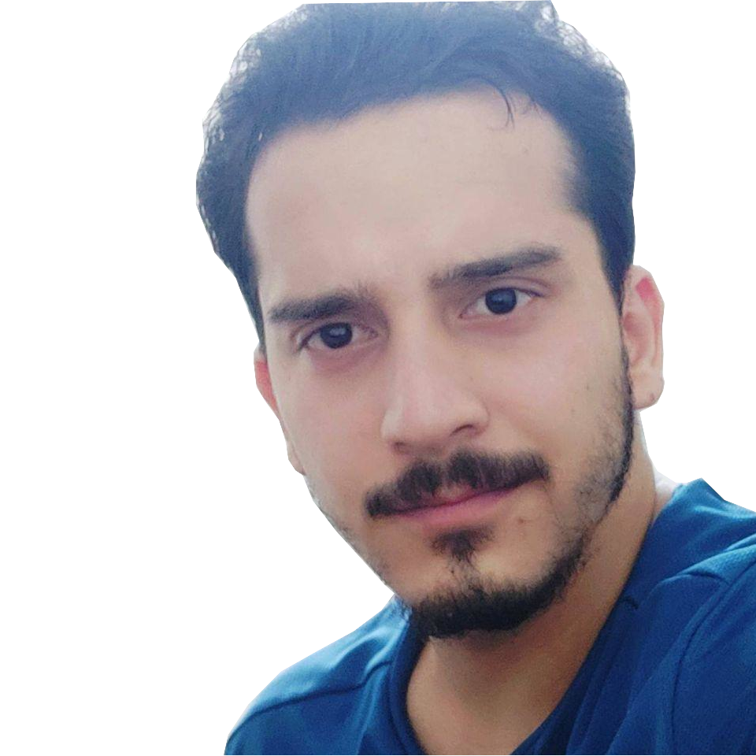

About Kanishak Vaidya

Academic Background
Kanishak Vaidya received the B.Tech. degree in Electronics and Communication Engineering from JawaharLal Nehru Government Engineering College, Sundernagar, HP India in 2017. He joined IISc Bangalore for M.Tech is Signal Processing in 2018 and upgraded to PhD in 2019. In January 2020, he was awarded Prime Minister's Research Fellowship. Kanishak completed his PhD in November 2023. Currently he is working at Qualcomm as a senior engineer, in Wireless Research and Development (WRD) team.
Education
| Qualification | Institute | Specialization | Graduated |
|---|---|---|---|
| PhD | IISc Bangalore | Communications | Nov 2023 |
| M.Tech | IISc Bangalore | Signal Processing | Jul 2023 |
| B.Tech | JNGEC Sundernagar | Electronics and Communications | Jul 2017 |
| 10+2 | KV Mandi | Non Medical and Medical Science | Mar 2013 |
| Matriculation | KV Mandi | Science | Mar 2011 |
Achievements
- Awarded Prime Minister's Research Fellowship (PMRF) in January 2020
- All India Rank 10 in GATE (EC), 2018. GATE Score: 1000
- 30th All India Rank in Junior Mathematical Olympiad, 2011
PhD Guide